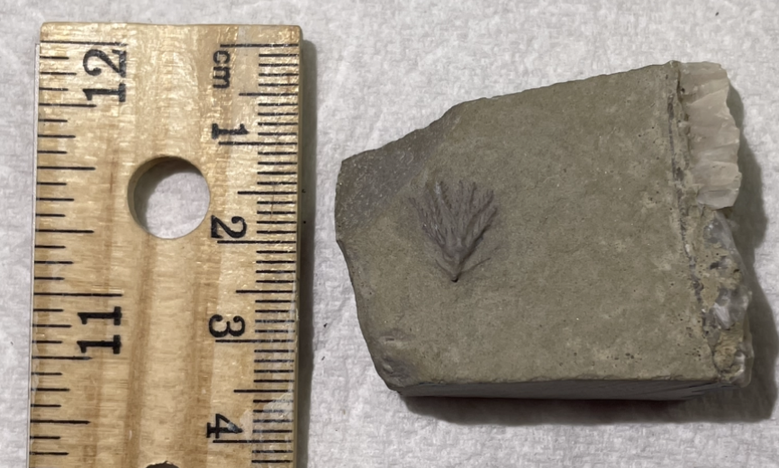
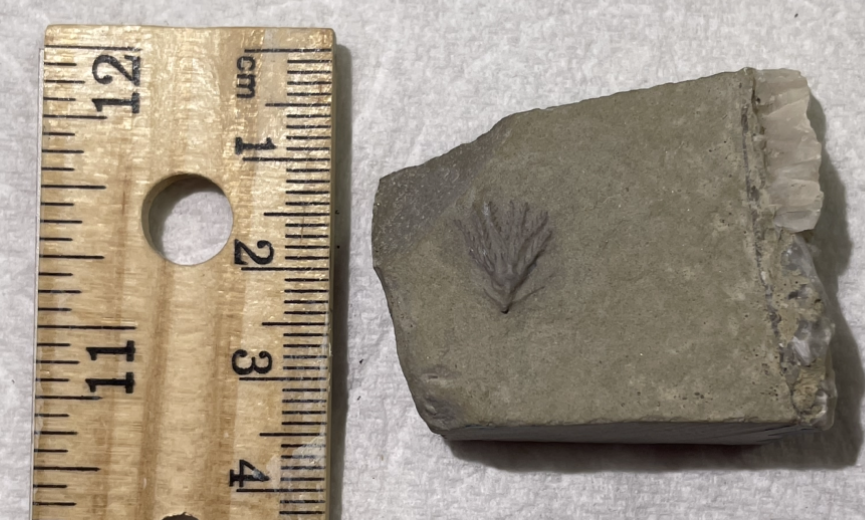

Clematocrinus retiarius
• Silurian
• Wenlock Limestone Formation
• Wren's Nest, Dudley, UK
Size: ~0.8 cm crown
A nice example of this hard-to-find crinoid from the classic Dudley locality. These crinoids are generally very small. This species is notable for its long cirri distributed along nodes on the stem, a few visible on this specimen.
 
